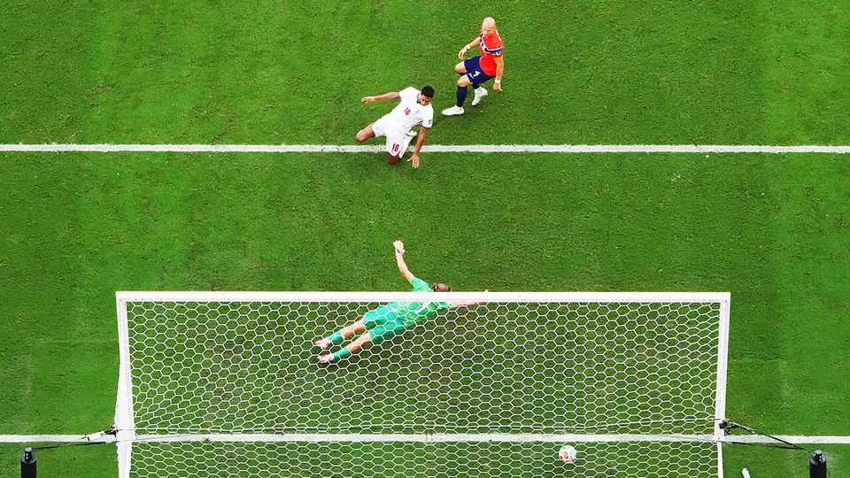

Britain’s bookies have weathered a tricky World Cup
But bigger problems are stacking up
July 16th 2026

“We were lucky today,” said England’s manager, Thomas Tuchel, after his team’s nerve-shredding 2-1 win over Norway on July 11th. Britain’s bookmakers enjoyed their own good fortune: England reached the semi-finals of the World Cup, but for betting purposes the match was a draw. By convention, match wagers are settled on the 90-minute scoreline (1-1). England’s winning goal came in extra time, saving the bookies millions of pounds.
Across this expanded 48-team World Cup, favourites have won 63% of matches in normal time, compared with 53% on average in the previous three. Underdogs prevailed in only 10%, against an average of 23% previously. Such results would once have perturbed British bookies, which do well when favourites don’t.
Not this time. Bookies have steered many customers towards “bet builders” (or “same-game parlays” in America). At Kambi, a sportsbook supplier, these made up more than 30% of bets at recent football tournaments. Punters might bet on, say, England to win, Jude Bellingham to score, and the match to have over nine corners and more than two bookings, all in one wager. In the Norway game, only one of those outcomes occurred in regular time. Such bets help the bookies’ profits. Trading data shared with The Economist by four of them suggest that, despite match results generally favouring customers, all remain broadly on course to achieve their usual margins.
Yet a decent World Cup will not dispel the industry’s broader worries. Tax and licensing reforms in the early 2000s were intended to allow gambling to flourish in the internet age. They succeeded, until the political wind changed. Last year’s budget raised the tax on online casino-style profits from 21% to 40%. From April 2027 most online sports betting will also face a tax increase, from 15% to 25%.
And the Gambling Commission, the industry regulator, has pressed ahead with “financial risk assessments”, intended to identify customers at risk of gambling harm. Bookies argue that the checks are intrusive and are driving customers to unlicensed operators. Anthony Kaminskas, founder of AK Bets, says 78% of his customers refuse to provide financial records when asked.
Gambling’s new growth story is America. Flutter, the world’s largest online-betting company, and owner of British brands including Betfair and Sky Bet, will delist from the London Stock Exchange next month, making New York its sole stock-market home. Britain’s bookies have cracked the problem of predictable football results. Their bigger challenge lies in Westminster. ■
For more expert analysis of the biggest stories in Britain, sign up to Blighty, our weekly subscriber-only newsletter.